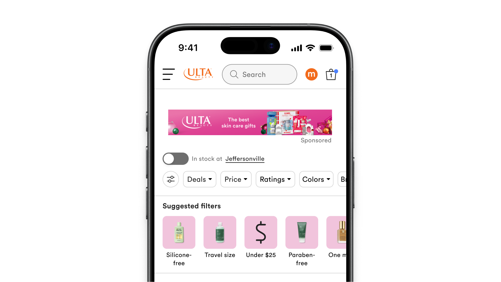
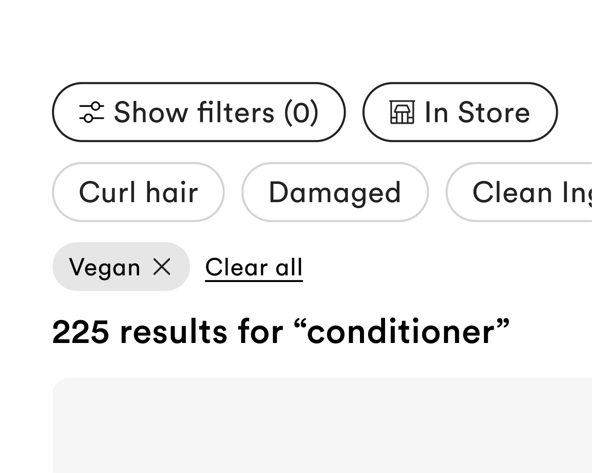

Uncovering a six figure ARR opportunity while redesigning filters.
A 3 month investigation and UX recommendation project.

Role & Team
Led design, research & strategy
Collaborated with the engineering lead, data analytics, and our 3rd party tool’s anchor.
Impact
+51M incremental ARR
*Estimation
Problem
The suggested filters experience didn’t surface relevant filters. As a result user engagement was low.
When it was engaged with, the suggested filters conversion numbers were great!
Goal
Investigate and recommend changes to the suggested filters experience.
I was originally tasked by the product team to “supercharge” the discovery experience, but as I started to dig into the filter rail functionality the problem area focused on it’s low engagement but high conversion.
Context
Ulta Beauty’s core filters live within an overlay, some of which are surfaced in an always-visible rail.
I spent 2+ years embedded in Ulta’s search & filters team.

Discovery
Baymard best practices, competitive research and internal deep dives informed the solution to the problem.
Key Finding #1
Only 1% of shoppers engaged with the suggested filters rail. However, those shoppers converted at 6.4x the baseline rate.
Key Finding #2
The tool was built to optimize for click-through-rate rather than conversion.
Key Finding #3
Users did not engage with the suggested filters because the filters were not relevant to their goal.
Solution
A full redesign of the filter section that included a main rail and a dynamic rail.
The component was built with flexibility in mind. Beyond search results pages, dynamic filters could be surfaced on sale, brand, or event pages.
The default and selected state of the main filter rail.